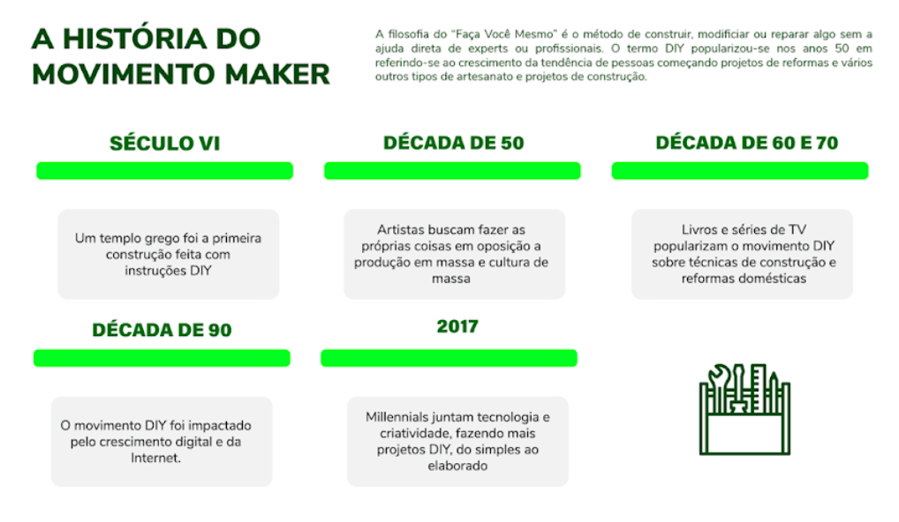

Alinha do tempo mostra que a filosofia do "Faça você mesmo" é um método para construir, modificar ou reparar algo sem a ajuda direta de especialistas ou profissionais. O termo "do-it-yourself" popularizou-se nos anos 50 devido ao crescimento de pessoas iniciando projetos de reformas e vários outros tipos de artesanato e projetos de construção. Segundo essa mesma imagem, a cronologia do movimento maker é apresentada como:
- Século VII - um templo grego foi a primeira construção feita com instruções do tipo "faça você mesmo"
- Década de 50- artistas buscavam fazer as próprias coisas em oposição a produção em massa e cultura de massa.
- Década de 60 e 70 - livros e séries de TV popularizaram o movimento de "faça você mesmo" com técnicas de construção e reformas domésticas.
- Década de 90 - omodelo "faça você mesmo" foi impactado pelo crescimento digital e da internet.
- 2017 - geração millennial junta tecnologia e criatividade fazendo mais projetos "do-it-yourself", desde o simples até o elaborado.
